수산물품질관리사-1차 (2018-07-21 기출문제)
1과목: 수산물품질관리 관련법령
1. 농수산물 품질관리법 제 1조(목적)에 관한 내용이다. ( )에 들어갈 내용을 순서대로 옳게 나열한 것은?
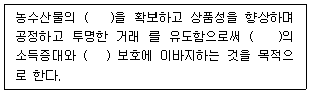
- 안전성, 농어업인, 소비자
- 위생성, 농어업인, 판매자
- 안전성, 생산자, 판매자
- 위생성, 생산자, 소비자
(정답률: 알수없음)

2. 농수산물 품질관리법상 용어의 정의로 옳지 않은 것은?
- 수산물: 수산업 · 어촌 발전 기본법에 따른 어업활동으로부터 생산되는 산물
- 수산가공품: 수산물을 국립수산과학원장이 정하는 재료 동의 기준에 따라 가공한 제품
- 지리적표시권: 등록된 지리적표시 를 배타적으로 사용할 수 있는 지식재산권
- 유해물질: 항생물질, 병원성 미생 물, 곰팡이 독소 등 식품에 잔류하거나 오염되어 사람의 건강에 해를 끼칠 수 있는 물질로서 총리령으로 정하는 것
(정답률: 알수없음)
3. 농수산물 품질관리법령상 수산물품질관리사에 관한 설명으로 옳지 않은 것을 모두 고른 것은?
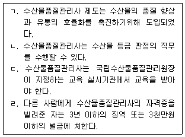
- ㄱ, ㄴ
- ㄱ, ㄷ
- ㄷ, ㄹ
- ㄴ, ㄷ, ㄹ
(정답률: 알수없음)
4. 농수산물 품질관리법령상 수산물 품질인증에 관한 설명으로 옳은 것은?
- 품질인증의 유효기간은 인증을 받은 날부터 5년으로 한다.
- 품질인증 대상품목은 식용을 목적으로 생산한 수산물로 한다.
- 품질인증을 받으려는 자는 관련서류를 첨부하여 국립수산과학원장에게 신청하여야 한다.
- 거짓이나 그 밖의 부정한 방법으로 인증을 받은 경우 품질인증 취소사유에는 해당하지 않는다.
(정답률: 알수없음)
5. 농수산물 품질관리법령상 유전자변형수산물에 관한 설명으로 옳지 않은 것은?
- 인공적으로 유전자를 재조합하여 의도한 특성을 갖도록 한 수산물을 유전자변형수산물이라한다.
- 유전자변형수산물의 표시대상품목은 해양수산부장관이 정하여 고시한다.
- 유전자변형수산물을 판매하기 위하여 보관하는 경우에는 해당 수산물이 유전자변형수산물 임을 표시하여야 한다.
- 유전자변형수산물의 표시를 거짓으로 한 자는 7년 이하의 징역 또는 1억원 이하의 벌금에 처한다.
(정답률: 알수없음)
6. 농수산물 품질관리법상 수산물 생산 · 가공시설의 등록 · 관리에 관한 내용이다. ( )에 들어갈 내용으로 옳은 것은?
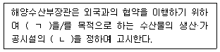
- ㄱ : 수출, ㄴ : 위생관리기준
- ㄱ : 수입, ㄴ : 검역기준
- ㄱ : 판매, ㄴ : 검역기준
- ㄱ : 유통, ㄴ : 위생관리기준
(정답률: 91%)
7. 농수산물 품질관리법상 해양수산부장관으로부터 다음 기준으로 수산물 및 수산가공품의 검사를 받는 대상이 아닌 것은?
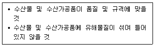
- 정부에서 수매하는 수산물
- 정부에서 비축하는 수산가공품
- 검사기준이 없는 수산물
- 수출 상대국의 요청에 따라 검사가 필요하여 해양수산부장관이 고시한 수산물
(정답률: 알수없음)
8. 농수산물 품질관리법상 생산단계 수산물 안전기준을 위반한 경우에 시 · 도지사가 해당 수산물을 생산한 자에게 처분할 수 있는 조치로 옳은 것을 모두 고른 것은?
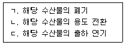
- ㄱ, ㄴ
- ㄱ, ㄷ
- ㄴ, ㄷ
- ㄱ, ㄴ, ㄷ
(정답률: 알수없음)
9. 농수산물 품질관리법상 지정해역의 보존 · 관리를 위하여 지정해역 위생관리종합대책을 수립 · 시행하는 기관은?
- 대통령
- 국무총리
- 해양수산부장관
- 식품의약품 안전처장
(정답률: 알수없음)
10. 농수산물 유통 및 가격 안정에 관한 법령상 ‘주산지’에 관한 시 · 도지사의 권한이 아닌 것은?
- 주산지의 변경 · 해제
- 주산지협의체의 설치
- 주요 농수산물의 생산지역이나 생산수면의 지정
- 주요 농수산물의 생산 · 출하 조절이 필요한 품목의 지정
(정답률: 알수없음)
11. 농수산물 유통 및 가격 안정에 관한 법령상 수산부류 거래품목이 아닌 것은?
- 염장어류
- 젓갈류
- 염건어류
- 조수육류
(정답률: 알수없음)
12. 농수산물 유통 및 가격 안정에 관한 법령상 ‘생산자 관련 단체’를 모두 고른 것은?
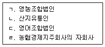
- ㄱ, ㄴ
- ㄴ, ㄷ
- ㄷ, ㄹ
- ㄱ, ㄷ, ㄹ
(정답률: 알수없음)
13. 농수산물 유통 및 가격 안정에 관한 법령상 경매 또는 입찰의 방법에 관한 설명으로 옳지 않은 것은?
- 경매 또는 입찰의 방법은 전자식을 원칙으로 한다.
- 공개경매를 실현하기 위하여 도매시장 개설자는 도매시장별로 경매방식을 제한할 수 있다.
- 도매시장 개설자는 해양수산부령으로 정하는 바에 따라 예약출하품 등을 우선적으로 판매하게 할 수 있다.
- 출하자가 서면으로 거래성립 최저가격을 제시한 경우에는 도매시장법인은 그 가격 미만으로 판매할 수 있다.
(정답률: 알수없음)
14. 농수산물 유통 및 가격 안정에 관한 법령상 농수산물 공판장에 관한 설명으로 옳지 않은 것은?
- 생산자 단체가 공판장을 개설하려면 시 · 도지사의 승인을 받아야 한다.
- 공판장의 경매사는 공판장의 개설자가 임면한다.
- 공판장에는 중도매인, 산지유통인 및 경매사를 둘 수 있다.
- 공판장의 중도매인은 공판장 개설자의 허가를 받아야 한다.
(정답률: 알수없음)
15. 농수산물 유통 및 가격 안정에 관한 법령상 농수산물 전자거래소의 거래수수료에 관한 설명으로 옳지 않은 것은?
- 전자거래소는 구매자로부터 사용료를 징수한다.
- 거래수수료는 거래금액의 1천분의 70을 초과할 수 없다.
- 전자거래소는 판매자로부터 사용료 및 판매수수료를 징수한다.
- 거래계약이 체결된 경우에는 한국농수산식품유통공사가 구매자를 대신하여 그 거래대금을 판매자에게 직접 결제할 수 있다.
(정답률: 알수없음)
16. 농수산물 유통 및 가격 안정에 관한 법령상 도매시장 개설자에게 ‘산지유통인 등록 예외’의 경우가 아닌 것은?
- 종합유통센터 · 수출업자 등이 남은 농수산물을 도매시장에 상장하는 경우
- 중도매인이 상장 농수산물을 매매하는 경우
- 도매시장법인이 다른 도매시장법인으로부터 매수하여 판매하는 경우
- 시장도매인이 도매시장법인으로부터 매수하여 판매하는 경우
(정답률: 알수없음)
17. 농수산물의 원산지 표시에 관한 법령상 용어의 정의로 옳지 않은 것은?
- 원산지: 농산물이나 수산물이 생산 · 채취 · 포획된 국가 · 지역이나 해역
- 식품접객업: 식품위생법에 따른 식품접객업
- 집단급식소: 수산업 · 어촌 발전 기본법에 따른 집단급식소
- 통신판매: 전자상거래 등에서의 소비자보호에 관한 법률에 따른 통신판매 중 우편, 전기통신 등을 이용한 판매
(정답률: 90%)
18. 농수산물의 원산지 표시에 관한 법령상 일반음식점에서 뱀장어, 대구, 명태, 꽁치를 조리하여 판매하는 중 원산지를 표시하지 않아 과태료를 부과 받았다. 부과된 과태료의 총 합산금액은? (단, 모두 1차 위반이며, 경감은 고려하지 않는다.)
- 30만원
- 60만원
- 90만원
- 120만원
(정답률: 알수없음)
19. 농수산물의 원산지 표시에 관한 법령상 수산물 등의 원산지 표시방법에 관한 설명으로 옳지 않은 것은?
- 포장재의 원산지 표시 위치는 소비자가 쉽게 알아볼 수 있는 곳에 표시한다.
- 포장재의 원산지표시 글자색은 포장재의 바탕색 또는 내용물의 색깔과 다른 색깔로 선명하게 표시한다.
- 살아있는 수산물의 경우 원산지 표시 글자 크기는 30포인트 이상으로 한다.
- 포장재의 원산지 표시 글자크기는 포장면적이 3,000cm2 이상인 경우는 10포인트 이상으로 한다.
(정답률: 알수없음)
20. 농수산물의 원산지 표시에 관한 법률상 수산물의 원산지 표시를 혼동하게 할 목적으로 그 표시 를 손상 · 변경하는 행위를 한 경우의 벌칙기준은?
- 3년이하의 징역이나 5천만원 이하의 벌금에 처하거나 이를 병과(倂科)할 수 있다.
- 5년이하의 징역이나 1억원 이하의 벌금에 처하거나 이를 병과(倂科)할 수 있다.
- 7년 이하의 징역 이나 1억원 이하의 벌금에 처하거나 이를 병과(倂科)할 수 있다.
- 10년이하의 징역 이나 1억 5천만원 이하의 벌금에 처하거나 이를 병과(倂科)할 수 있다.
(정답률: 알수없음)
21. 농수산물의 원산지 표시에 관한 법률상 수산물의 원산지 표시대상자가 원산지를 2회이상 표시하지 않아 처분이 확정된 경우 원산지 표시제도 교육 이수명령의 이행기간은?
- 교육 이수명령을 통지받은 날부터 최대 1개월 이내
- 교육 이수명령을 통지받은 날부터 최대 2개월 이내
- 교육 이수명령을 통지받은 날부터 최대 3개월 이내
- 교육 이수명령을 통지받은 날부터 최대 5개월 이내
(정답률: 알수없음)
22. 농수산물의 원산지 표시에 관한 법률상 수산물의 원산지 표시의 정보제공에 관한 설명이다. ( )에 들어갈 내용으로 옳은 것은?
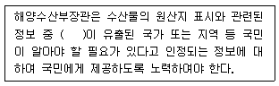
- 방사성물질
- 패류독소물질
- 항생물질
- 유기독성물질
(정답률: 알수없음)
23. 농수산물의 원산지 표시에 관한 법률상 원산지의 표시여부·표시사항과 표시방법 등의 적정성을 확인하기 위하여 관계 공무원으로 하여금 원산지 표시대상 수입 수산물에 대해 수거 또는 조사하게 할 수 있는 기관의 장이 아닌 것은?
- 해양수산부장관
- 관세청장
- 식품의약품안전처장
- 시 · 도지사
(정답률: 알수없음)
24. 친환경농어업 육성 및 유기식품 등의 관리 · 지원에 관한 법률상 유기수산물의 인증 유효기간은?
- 인증을 받은 날부터 1년
- 인증을 받은 날부터 2년
- 인증을 받은 날부터 3년
- 인증을 받은 날부터 4년
(정답률: 알수없음)
25. 친 환경농어업 육성 및 유기식품 등의 관라·지원에 관한 법률에 관한 설명으로 옳지 않은 것은?
- 유기식품에는 유기수산물, 유기가공식품, 비식용유기가공품이 있다.
- 친환경수산물에는 유기수산물, 무항생제수산물, 활성처리제 비사용 수산물이 있다.
- 유기어업자재는 유기수산물을 생산하는 과정에서 사용할 수 있는 허용물질로 만든 제품을 말한다.
- 친환경어업을 경영하는 사업자는 화학적으로 합성된 자재를 사용하지 아니하거나 그 사용을 최소화하도록 노력하여야 한다.
(정답률: 알수없음)
2과목: 수산물유통론
26. ‘선어’에 해당하는 것을 모두 고른 것은?
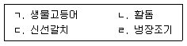
- ㄱ, ㄴ, ㄷ
- ㄱ, ㄴ, ㄹ
- ㄱ, ㄷ, ㄹ
- ㄴ, ㄷ, ㄹ
(정답률: 알수없음)
27. 국내산 고등어 유통에 관한 설명으로 옳지 않은 것은?
- 주 생산 업종은 근해채낚기어업이다.
- 총허용어획량(TAC) 대상 어종이다.
- 대부분 산지수협 위판장을 통해 유통된다.
- 크기에 따라 갈사, 갈고, 갈소고, 소소고, 소고, 중고, 대고 등으로 구분한다.
(정답률: 알수없음)
28. 활어는 공영도매시장보다 유사도매시장에서 거래량이 많다. 이에 관한 설명으로 옳지 않은 것은?
- 유사도매시장은 부류별 전문도매상의 수집활동을 중심으로 운영된다.
- 유사도매시장은 생산자의 위탁을 중심으로 운영된다.
- 유사도매시장은 주로 활어를 취급하기 때문에 넓은 공간(수조)을 갖추고 있다.
- 유사도매시장은 활어차 산소공급기, 온도조절기 등 전문 설비를 갖추고 있다.
(정답률: 알수없음)
29. 양식 넙치의 유통 특성에 관한 설명으로 옳은 것을 모두 고른 것은?
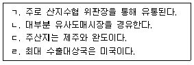
- ㄱ
- ㄱ, ㄹ
- ㄴ, ㄷ
- ㄴ, ㄷ, ㄹ
(정답률: 알수없음)
30. 수산물 공급의 직접적인 증감요인에 해당하는 것은?
- 생산기술(비용)
- 인구 규모
- 소비자 선호도
- 소득 수준
(정답률: 알수없음)
31. 국내 수산물 가격이 폭등하는 원인에 해당하지 않는 것은?
- 수산식품 안전성 문제 발생
- 생산(어획)량 급감
- 국제 수급문제로 수입 급감
- 국제 유류가격 급등
(정답률: 알수없음)
32. 수산가공품의 장점이 아닌 것은?
- 장기저장이 가능하다.
- 수송이 편리하다.
- 안전한 생산으로 상품성이 향상된다.
- 수산물 본연의 맛과 질감을 유지할 수 있다.
(정답률: 알수없음)
33. 냉동상태로 유통되는 비중이 가장 높은 수산물은?
- 명태
- 조피볼락
- 고등어
- 전복
(정답률: 알수없음)
34. 최근 연어류 수입이 급증하고 있는데, 이에 관한 설명으로 옳은 것은?
- 국내에 수입되는 연어류는 대부분 일본산이다.
- 국내에 수입되는 연어류는 대부분 자연산이다.
- 최근에는 냉동보다 신선냉장 연어류 수입이 많다.
- 국내에서 연어류는 대부분 통조림으로 소비된다.
(정답률: 알수없음)
35. 활오정어의 유통단계별 가격이 다음과 같을 때, 소비지 도매단계의 유통마진율(%)은 약 얼마인가? (단 유통비용은 없는 것으로 가정한다.)
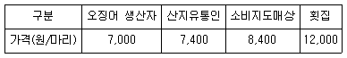
- 12
- 15
- 18
- 21
(정답률: 알수없음)
36. 다음 사례에 나타난 수산물의 유통기능이 아닌 것은?
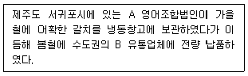
- 장소효용
- 소유효용
- 시간효용
- 품질효용
(정답률: 알수없음)
37. 수산물 유통의 일반적 특성으로 옳은 것은?
- 생산 어종이 다양하지 않다.
- 공산품에 비해 물류비가 낮다.
- 품질의 균질성이 낮다.
- 계획 생산 및 판매가 용이하다.
(정답률: 알수없음)
38. 수산물 소매상에 관한 설명으로 옳은 것은?
- 브로커 (broker)는 소매상에 속한다.
- 백화점과 대형마트는 의무휴무제 적용을 받는다.
- 수산물 가공업체에 판매하는 것은 소매상이다.
- 수산물 전문점의 품목은 제한적이나 상품 구성은 다양하다.
(정답률: 60%)
39. 수산물 전자상거래에 관한 설명으로 옳은 것을 모두 고른 것은?
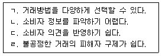
- ㄱ, ㄴ
- ㄴ, ㄷ
- ㄴ, ㄷ
- ㄷ, ㄹ
(정답률: 알수없음)
40. 수산물 소비자를 대상으로 하는 직접적인온판매촉진 활동이 아닌 것은?
- 시식 행사
- 쿠폰 제공
- 경품 추첨
- PR
(정답률: 알수없음)
41. 수산물 공동판매의 장점이 아닌 것은?
- 출하조절이 용이하다.
- 투입 노동력이 증가한다.
- 시장교섭력이 향상된다.
- 운송비가 절감된다.
(정답률: 90%)
42. 심리적 가격전략에 해당하지 않는 것은?
- 단수가격
- 침투가격
- 투입 노동력이 증가한다.
- 운송비가 절감된다.
(정답률: 알수없음)
43. 국내 수산불 유통이 직면한 문제점이 아닌 것은?
- 표준화 · 등급화의 미흡
- 수산가공식품의 소비 증가
- 복잡한 유통단계
- 저은물류시설의 부족
(정답률: 알수없음)
44. 공영도매시장의 수산물 거래방법 중 협의 · 조정하여 가격을 결정하는 것은?
- 경매
- 입찰
- 수의매매
- 정가매매
(정답률: 90%)
45. 소비지 공영도매시장에서 수산물의 수집과 분산기능을 모두 수행할 수 있는 유통주체는?
- 산지유통인
- 매매참가인
- 중도매인(단, 허가받은 비상장 수산물은 제외)
- 시장도매인
(정답률: 알수없음)
46. A는 중국에 수산물을 수출하기 위해 생산 · 가공시절을 부산광역사 남항에서 운영하고자 한다. 해당 생산 · 가공사절 등록신청서를 어느 기관에 제출하여야 하는가?
- 부산광역시장
- 국립수산과학원장
- 국립수산물품질관리원장
- 식품의약품안전처장
(정답률: 알수없음)
47. 최근 완도지역의 전복 산지가격이 kg 당(10마라) 50,000원에서 30,000원으로 급락하자, 생산자단체에서는 전복 소비촉진 행사를 추진하였다. 이 사례에 해당되는 사업은?
- 유통협약사업
- 유통명령사업
- 정부 수매비축사업
- 수산물자조금사업
(정답률: 알수없음)
48. 수산물 산지 유통정보에 해당하지 않는 것은?
- 수산물 시장별정보(한국농수산식품유통공사)
- 어류양식동향조사(통계청)
- 어업생산동향조사(통계청)
- 어업경영 조사(수협중앙회)
(정답률: 알수없음)
49. 수산물의 상적 유통기관에 해당하는 것은?
- 운송업체
- 포장업체
- 물류정보업체
- 도매업체
(정답률: 알수없음)
50. 소비지 공영도매시장에 관한 설명으로 옳지 않은 것은?
- 다양한 품목의 대량 수집 · 분산이 용이하다.
- 콜드체인시스템이 완비되어 저온유통이 활발하다.
- 공정한 가격을 형성하고 유통정보를 제공한다.
- 원산지 표시 점검, 안전성 검사 등 소비자 식품 안전을 도모한다.
(정답률: 알수없음)
3과목: 수확후 품질관리론
51. 다음은 어류의 사후경직 현상에 관한 설명으로 옳은 것을 모두 고른 것은?
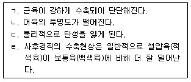
- ㄱ, ㄹ
- ㄱ, ㄴ, ㄷ
- ㄴ, ㄷ, ㄹ
- ㄱ, ㄴ, ㄷ, ㄹ
(정답률: 알수없음)
52. 수산물의 선도에 관한 셜명으로 옳지 않은 것은?
- 휘발성염기질소(VBN) 는 사후 직후부터 계속적으로 증가한다.
- K값은 ATP(adenosine triphosphate) 관련 물질 분해에 따라 사후 신속히 증가하다가 K값의 변화가 완료된다.
- 수산물을 가공원료로 이용하는 경우에는 휘발성염기질소(VBN) 가 적합한 선도지표이다.
- 넙치를 선어용 횟감으로 이용하는 경우에는 K값이 적합한 선도지표이다.
(정답률: 알수없음)
53. 어육단백절에 관한 설명으로 옳지 않은 것은?
- 근육단백질은 용매에 대한 용해성 차이에 따라 3 종류로 구별된다.
- 혈압육(적색육)은 보통육(백색육)에 비해 근형질단백질이 적다.
- 어육단백질은 근기질단백질이 적고 근원섬유단백질이 많아 축육에 비해 어육의 조직이 연하다.
- 콜라겐(collagen)은 근 기질단백질에 해당된다.
(정답률: 50%)
54. 말린 오징어나 말린 전복의 표면에 형성되는 백색 분말의 주성분은?
- 티로신(tyrosine)
- 만니톨 (mannitol)
- MSG
- 타우린(taurine)
(정답률: 알수없음)
55. 다음에서 시간-온도 허용한도 (T.T.T.)에 의한 냉동오징어의 품질저하량은? (단, -18℃에서 품질유지기한은 100일로 한다.)
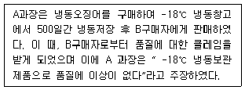
- 2.5
- 5
- 7.5
- 10
(정답률: 50%)
56. 냉동기의 냉동능력을 나타내는 ‘1 냉동톤(ton of refrigeration) ’의 정의는?
- 0℃의 물 1톤을 12시간에 0℃의 얼음으로 만드는 냉동능력을 말한다.
- 0℃의 물 1톤을 24시간에 0℃의 얼음으로 만드는 냉동능력을 말한다.
- 0℃의 물 1톤을 12시간에 -4℃의 얼음으로 만드는 냉동능력을 말한다.
- 0℃의 물 1톤을 24시간에 -4℃의 얼음으로 만드는 냉동능력을 말한다.
(정답률: 알수없음)
57. 수산물의 냉동 및 해동에 관한 설명으로 옳지 않은 것은?
- 상은보다 낮은 온도로 낮추기 위한 냉각방법으로는 증발잠열을 이용하는 방법이 산업적으로 널리 이용된다.
- 수산물을 냉동할 경우 일반적으로 제품내부은도가 -1℃에서 -5℃ 사이의 온도범위에서 빙결정이 가장 많이 생성된다.
- 냉동수산물 해동 시 제품의 내부로 들어갈수록 평탄부의 형성없이 급속히 해동되는 경향이 있다.
- 수산물 동결 시 빙결정 수가 적으면 빙결정의 크기가 커진다.
(정답률: 알수없음)
58. 어육소시지와 같은 제품을 봉합 · 밀봉하는 방법으로 실, 끈 또는 알루미늄 재질을 사용하여 포장용기의 끝을 묶는 방법은?
- 기계적 밀봉법
- 접착제 사용법
- 결속법
- 고주파 접착법
(정답률: 알수없음)
59. 수산물 표준규격 제3조(거래단위)에 따라 ‘기본으로 하는 수산물의 표준거래단위’에 해당되지 않는 것은?
- 5kg
- 10kg
- 20kg
- 50kg
(정답률: 알수없음)
60. 고밀도 폴리에틸렌 등을 이용한 적층 필름 주머니에 식품을 넣고 밀봉한 후 가열 살균한 식품은?
- 레토르트 파우치 식품
- 통조림 식품
- 진공 포장한 건조식품
- 저은 살균 우유
(정답률: 알수없음)
61. 수산식품의 냉동 · 저장 시, 품질변화와 방지책의 연결로 옳지 않은 것은?
- 건조 - 포장
- 지질산화 - 글레이징(glazing)
- 단백질 변성 - 동결변성방지제 첨가
- 드립 발생 - 급속 동결 후 저장 온도의 변동을 크게 함
(정답률: 알수없음)
62. 수산식품을 냉동하여 빙결정을 승화•건조시키는 장치는?
- 열풍 건조 장치
- 분무 건조 장치
- 동결 건조 장치
- 냉풍 건조 장치
(정답률: 알수없음)
63. 훈제품 중 냉훈품의 저장성을 증가시키는 요인에 해당되지 않는 것은?
- 훈연 중 건조에 의한 수분의 감소
- 가열에 의한 미생물의 사멸
- 훈연 성분 중의 향균성 물질
- 첨가된 소금의 영향
(정답률: 알수없음)
64. 가다량어 자배건품(가쓰오부시) 제조 시, 곰팡이를 붙이는 이유에 해당하지 않는 것은?
- 병균성 세균의 증가
- 지방 함량의 감소
- 수분 함량의 감소
- 제품의 풍미 증가
(정답률: 60%)
65. 수산가공품 중에서 건제품의 연결이 옳은 것은?
- 동건품 - 황태
- 소건품 - 마른 멸치
- 염건품 - 마른 오징어
- 자건품 - 굴비
(정답률: 알수없음)
66. 식품공전 상 액젓의 규격 항목에 해당하는 것을 모두 고른 것은?
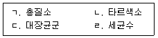
- ㄱ, ㄹ
- ㄱ, ㄴ, ㄷ
- ㄴ, ㄷ, ㄹ
- ㄱ, ㄴ, ㄷ, ㄹ
(정답률: 알수없음)
67. 꽁치 통조림의 진공도를 측정한 결과 진공도가 25.0cmHg일 때, 관의 내기압(cmHg)은? (단, 측정 당시 관의 외기압은 75.3cmHg로 한다.)
- 25.0
- 50.3
- 75.3
- 100.3
(정답률: 알수없음)
68. 수산식품의 비효소적 갈변현상이 아닌 것은?
- 냉동 참치육의 갈변
- 참치 통조림의 갈변
- 동결 가리비 패주의 황변
- 새우의 흑변
(정답률: 알수없음)
69. 세균성 식중독을 예방하는 방법이 아닌 것은?
- 익혀먹기
- 냉동식품을 실온에서 장시간 해동 하기
- 청결 및 손 씻기
- 교차오염방지
(정답률: 알수없음)
70. 간 기능이 약한 60대 남자가 여름철에 조개류를 날것으로 먹은 후 발한 · 오한 증세가 있었고, 수일 후 패혈증으로 입원하였다. 가장 의심되는 원인세균윤?
- 대장균(Escherichia coli)
- 캠필로박터 제주니(Campylobacter jejuni)
- 살모넬라 엔테리티디스(Salmonella enteritidis)
- 비브리오 불니피쿠스(Vibrio vulnifcus)
(정답률: 알수없음)
71. 식품안전관리언증기준 (HACCP)의 7가지 원칙 중 다음 4개의 적용과정을 순서대로 나열한 것은?
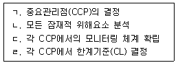
- ㄱ - ㄴ - ㄹ - ㄷ
- ㄱ - ㄹ - ㄷ - ㄴ
- ㄴ - ㄹ - ㄷ - ㄹ
- ㄴ - ㄱ - ㄹ - ㄷ
(정답률: 알수없음)
72. ( )에 들어갈 적합한 중금속의 종류는?
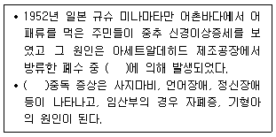
- 납
- 구리
- 수은
- 비소
(정답률: 알수없음)
73. 수산식품 재조 · 가공업소가 HACCP 인증을 받기 위해 준수하여야 하는 선행요건이 아닌 것은?
- 우수인력 채용관리
- 냉장 · 냉동설비관리
- 영업장(작업장)관리
- 위생관리
(정답률: 알수없음)
74. 식품위생법 상 판매 가능한 수산물은?
- 말라카이트그린 이 검출된 메기
- 메틸 수은이 5.0mg/kg 검출된 새치
- 마비성 패독이 0.3mg/kg 검출된 홍합
- 복어독(tetrodotoxin)이 20MU/g 검출된 복어
(정답률: 알수없음)
75. 패류독소 식중독에 관한 설명으로 옳지 않은 것은?
- 패류독소는 주로 패류의 내장에 존재하며 조리 시 쉽게 열에 파괴된다.
- 마비성패류독소 식중독(PSP) 증상은 섭취 후 30분 내지 3시간 이내에 마비, 언어장애, 오심, 구토 증상을 나타낸다.
- 설사성패류독소 식중독 (DSP)은 설사가 주요 증상으로 나타나고 구토 복통을 일으킬 수 있다.
- 기억상실성패류독소 식중독(ASP)은 기억상실이 주요 중상으로 나타나고 메스꺼움, 구토를 일으킬 수 있다.
(정답률: 알수없음)
4과목: 수산일반
76. 우리나라 수산업의 자연적 입지조건에 관한 설명으로 옳지 않은 것은?
- 동해의 하층에는 통해 고유수가 있다.
- 남해는 난류성 어족의 월동장이 된다.
- 서해(황해) 연안에서는 강한 조류로 상 · 하층의 혼합이 잘 일어난다.
- 서해(황해), 동해, 남해 중 가장 넓은 해역은 서해이다.
(정답률: 알수없음)
77. 우리나라 수산업법에서 규정하고 있는 수산업에 해당하는 것을 모두 고른 것은?
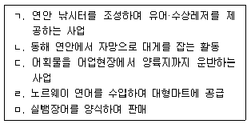
- ㄱ, ㄷ
- ㄴ, ㄹ
- ㄴ, ㄷ, ㅁ
- ㄷ, ㄹ, ㅁ
(정답률: 알수없음)
78. 2010년 이후 우리나라 정부 수산통계에서 연간 양식 생산량이 가장 많은 것은?
- 해조류
- 패류
- 어류
- 갑각류
(정답률: 알수없음)
79. 수산업의 특성에 관한 설명으로 옳은 것을 모두 고른 것은?
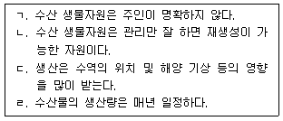
- ㄱ
- ㄴ, ㄷ
- ㄱ, ㄴ, ㄷ
- ㄴ, ㄷ, ㄹ
(정답률: 알수없음)
80. 식물플랑크톤에 관한 설명으로 옳지 않은 것은?
- 부영부(pelagic zone)에 서식한다.
- 다세포 식물도 포함된다.
- 광합성 작용을 한다.
- 규조류(돌말류)는 주요 식물플랑크톤이다.
(정답률: 60%)
81. 미역에 관한 설명으로 옳지 않은 것은?
- 통로조직이 없다.
- 다세포 식물이다.
- 몸은 뿌리, 줄기, 잎으로 나누어진다.
- 물속의 영양염을 몸 표면에서 직접 흡수한다.
(정답률: 50%)
82. 몸은 좌우대칭이고 팔, 머리, 몸통으로 구분되며, 10개의 팔과 2개의 눈을 가진 두족류는?
- 문어
- 낙지
- 주꾸미
- 갑오징어
(정답률: 알수없음)
83. 수산자원생물의 계군을 식별하기 위한 방법으로 옳은 것을 모두 고른 것은?
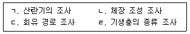
- ㄴ
- ㄴ, ㄹ
- ㄱ, ㄷ, ㄹ
- ㄱ, ㄴ, ㄷ, ㄹ
(정답률: 알수없음)
84. 자원량의 변동을 나타내는 러셀(Russell)의 방정식에서 ‘자연 증가량’을 결정하는 요소가 아닌 것은?
- 가입량
- 성장량
- 어획 사망량
- 자연 사망량
(정답률: 알수없음)
85. 다음 중 그물코 한 발의 길이가 가장 짧은 것은?
- 90경 여자 그물감
- 42절 라셀 그물감
- 그물코 뻗친 길이가 35mm인 결절 그물감
- 그물코 발의 길이가 15mm인 무결절 그물감
(정답률: 알수없음)
86. 서해의 주요 어업으로 옳은 것은?
- 오징어 채낚기어업
- 대게 자망어업
- 붉은대게 통발어업
- 꽃게 자망어업
(정답률: 80%)
87. 과도한 어획 회피, 치어 및 산란 성어의 보호를 위한 어업 자원의 합리적 관리 수단은?
- 조업 자동화
- 어장 및 어기의 제한
- 해외 어장 개척
- 어구 사용량의 증대
(정답률: 알수없음)
88. 양식장 적지 선정을 위한 산업적 조건이 아닌 것은?
- 교통
- 인력
- 관광산업
- 해저의 지형
(정답률: 알수없음)
89. 활어차를 이용한 양식 어류의 활어 수송에 관한 설명으로 옳지 않은 것은?
- 운반 전에 굶겨서 운반하는 것이 바람직하다.
- 운반 중 산소 부족을 방지하기 위하여 산소 공급 장치를 이용하기도 한다.
- 활어 수송차량으로 신속하게 운반하며 외상이 생기지 않도록 한다.
- 운반 수온은 사육 수온보다 높게 유지하여 수온 스트레스를 줄인다.
(정답률: 알수없음)
90. 다음 중 지수식 양어지에서 하루 중 용존산소량이 가장 낮은 시간대는?
- 오전 4 ~ 5시
- 오전 10 ~ 11시
- 오후 2 ~ 3시
- 오후 5 ~ 6시
(정답률: 알수없음)
91. 양어 사료에 관한 설명으로 옳지 않은 것은?
- 양어 사료는 가축 사료보다 단백질 함량이 더 높다.
- 어류의 필수 아미노산은 24가지이다.
- 잉어 사료는 뱀장어 사료보다 탄수화물 함량이 더 높다.
- 어유(fish oil)는 필수 지방산의 중요한 공급원이다.
(정답률: 알수없음)
92. 양식 생물과 채묘 시설이 옳게 연결된 것은?
- 굴: 말목식 채묘 시설
- 피조개: 완류식 채묘 시설
- 바지락: 똇목식 채묘 시설
- 대합: 침설 수하식 채묘 시설
(정답률: 알수없음)
93. 어류 양식장에서 질병을 치료하는 방법 중 집단 치료법이 아닌 것은?
- 주사법
- 약욕법
- 침지법
- 경구 투여법
(정답률: 알수없음)
94. ( )에 들어갈 유생의 명칭은?
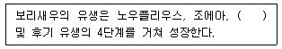
- 메갈로파
- 담륜자
- 미시스
- 피면자
(정답률: 알수없음)
95. 부화 후 아우리쿨라리아 (auricularia)와 돌리올라리아(doliolaria)로 변태 과정을 거쳐저서 생활로 들어가는 양식 생물은?
- 소라
- 해삼
- 꽃게
- 우렁쉥이(멍게)
(정답률: 50%)
96. 녹조류가 아닌 것은?
- 파래
- 청각
- 모자반
- 매생이
(정답률: 알수없음)
97. 관상어류의 조건으로 옳지 않은 것은?
- 희귀한 어류
- 특이한 어류
- 아름다운 어류
- 성장이 빠른 어류
(정답률: 알수없음)
98. 수산업법에 따른 어업 관리제도 중 면허 어업에 속하는 것은?
- 정치망 어업
- 근해 선망 어업
- 근해 통발 어업
- 연안 복합 어업
(정답률: 알수없음)
99. 2017년 기준 우리나라 총허용어확량(TAC)이 적용되는 대상 수역과 관리 어종이 아닌 것은?
- 동해 연안에서 통발로 잡은 문어
- 연평도 연안에서 통발로 잡은 꽃게
- 남해 근해에서 대형 선망으로 잡은 고등어
- 동해 근해에서 근해 자망으로 잡은 대게
(정답률: 알수없음)
100. ( )에 들어갈 숫자를 순서대로 옳게 나열한 것은?
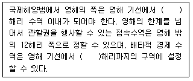
- 12, 176
- 12, 200
- 24, 176
- 24, 200
(정답률: 알수없음)